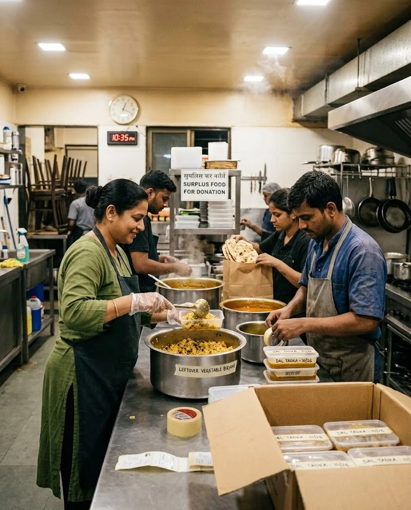
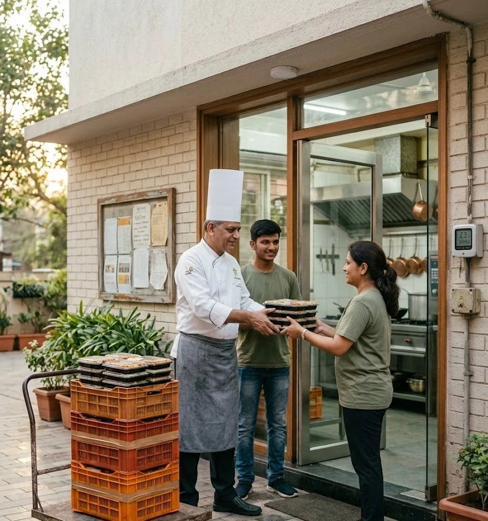

What is FoodLoop?
Every night, restaurants, college canteens and banquet halls in Mumbai have good food left over. At the same time, shelters and community kitchens nearby need meals. FoodLoop connects them. A kitchen posts its leftover food with a pickup deadline, and FoodLoop offers it to the nearby organisation that can collect it before the deadline.

Kitchen staff packing leftover food at closing time.
How it works
- A kitchen (donor) posts the food, the quantity and the pickup deadline.
- FoodLoop gives every nearby shelter (recipient) a score and ranks them.
- The top-ranked shelter gets the offer. If they pass, it goes to the next one.
- The shelter's own staff come and collect the food. No delivery rider is needed.

Shelter staff collect the food and show their handover code at the kitchen.
How the score is calculated
| Factor | Weight | Meaning |
|---|---|---|
| Time | 35% | Can they reach the kitchen before the deadline? |
| Distance | 25% | How close are they? |
| Capacity | 20% | Do they have room for this much food? |
| Food type | 10% | Do they accept veg / non-veg? |
| Reliability | 10% | Did they collect on time before? |
Our numbers so far
Who can use it?
- Donors: restaurants, hotels, canteens, caterers, banquet halls
- Recipients: NGOs, shelters, orphanages, old-age homes, community kitchens